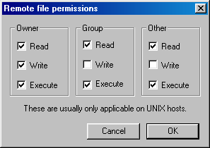
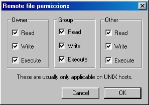

mtinstall - Installing Movable Type
This document describes the process of installing the Movable Type system on your machine.
Movable Type requires the following:
The distribution can be downloaded from the Movable Type web site at http://www.movabletype.org/download.shtml.
There are two versions of the Movable Type distribution available for download: one is bundled with all of the external libraries that you will need to run the system, whereas the other contains just the Movable Type system itself. If you know that your hosting provider has all of the modules already installed, download the ``lite'' version without the external libraries. Otherwise, the ``full'' version with external libraries included will make installation easier, because you will not have to worry about installing external libraries.
After downloading, the file that you downloaded is saved in .tar.gz format; this is a compressed bundle containing the files in the Movable Type distribution. Unpack this archive.
(Need help unpacking archives?).
The following files are Perl scripts: mt-add-notify.cgi, mt-check.cgi,
mt-comments.cgi, mt-load.cgi, mt-send-entry.cgi, mt-tb.cgi,
mt-search.cgi, mt.cgi, mt-xmlrpc.cgi, and mt-view.cgi.
The first line of each of these files must contain the path to Perl on your
webserver; typically this is #!/usr/bin/perl. You may need to change this
if Perl is at a different location on your webserver, such as
/usr/local/bin/perl. If you do need to change the setting, take care not to
remove the -w at the end of the first line in each file; this setting turns
on warnings in Perl, and it is important that it be left on.
To determine the location of Perl on your webserver, take a look at the support pages for your hosting service. Alternatively, if you have a shell (command line) account, and are familiar using it, you can log in to that account that type:
$ whereis perl
This will give you the location(s) of Perl on your system.
Note: despite its extension, mt-db-pass.cgi is not a normal Perl script, so it should not contain the path to Perl.
If you will be installing Movable Type into your cgi-bin directory, note that you will need to upload your static files--images, docs, and styles.css--into a directory outside of the cgi-bin. Static files cannot be left inside the cgi-bin, because the web server will try to execute them, rendering them unusable through the web interface.
A solution is to create a new directory in your web-accessible area called mt-static, then upload images, docs, and styles.css into that directory. Note the URL corresponding to mt-static, because you will need to use it later when configuring the system in your mt.cfg file.
TIP: You can make your Movable Type installation more secure if you run the system under cgiwrap or suexec. See these tips on using cgiwrap or suexec to find out if you have either of these tools.
These require no external directories to be created.
If you plan to use Movable Type's Berkeley DB support (the default):
Choose where on your webserver you would like to store your Movable Type database files.
If you are not installing into a cgi-bin directory, it is advisable from a security standpoint to create the database directory outside of your web-accessible directories. This prevents web browsers from seeing any of your database content. For example, many hosted accounts have a home directory that is not web-accessible, then a public_html directory that is the root of your web-accessible area. Placing the database outside of the web-accessible area prevents web browsers from seeing your database content; placing it in the cgi-bin directory has the same effect.
If you plan to use Movable Type's SQLite database support:
SQLite stores your data in a single database file. However, it needs to be able to create that file itself, so you must store that file in a world-writable directory. Thus, you should follow the guidelines above regarding Berkeley DB support for the location of the SQLite database directory.
For example, if you are installing Movable Type at http://www.your-site.com/movabletype/, you would change the CGIPath line to
CGIPath http://www.your-site.com/movabletype/
NOTE: make sure that your URL contains a forward slash (/) at the end!
In the text editor where you are editing mt.cfg, add these lines:
ObjectDriver driver_name Database database_name DBUser database_user
where: driver_name is one of the following: DBI::mysql, DBI::postgres, or DBI::sqlite; database_name is the name of the SQL database where you wish to store your data, and database_user is the username used to connect to the database
If your SQL database server is on a different host, you can use DBHost to specify the hostname:
DBHost database_host
If your SQL database server is on the localhost, but the socket is not in a standard location, you can set the path to the socket using DBSocket:
DBSocket /path/to/mysql.sock
If your SQL database server is on a different port than the default, you can set the port using DBPort:
DBPort port_number
Note: if you are using MySQL or PostgreSQL, the database that you specify must already exist--Movable Type cannot create it automatically!
Note: if you are using SQLite, no username is required, and database_name is the name of the database file. You can name the database file whatever you want--mtdb would be a good choice. Remember to include the name of the directory where you are storing the database file in the database_name. For example:
Database db/mtdb
In the text editor where you are editing mt.cfg, change the line
DataSource ./db
to instead read
DataSource /FULL/PATH/TO/DB
where /FULL/PATH/TO/DB is replaced by the full filesystem path to the db directory you just created. For example, if you create the directory at /home/melody/db, the above line would read
DataSource /home/melody/db
You need to set the StaticWebPath value in your mt.cfg file to the URL corresponding to the directory that you chose for your static files (images, docs, and styles.css). For example, if you chose to locate your static files at the root of your web-accessible area, you would add this line to mt.cfg:
StaticWebPath /mt-static/
To enable the heightened security that cgiwrap and suexec provide, add the following lines to your mt.cfg file:
DBUmask 0022 HTMLUmask 0022 UploadUmask 0022 DirUmask 0022
For security purposes, your SQL database password should not simply be placed in mt.cfg. Instead, you must set it in the file called mt-db-pass.cgi.
Open mt-db-pass.cgi in a text editor. On this line:
database_password
Replace database_password with the password used to connect to your SQL database.
Then save the mt-db-pass.cgi file, and exit the text editor.
Upload all of the files in the Movable Type distribution to your webserver.
If you are installing into the cgi-bin: you should upload images, docs, and styles.css into the location you chose for your static files.
NOTE: be careful when doing this, as certain files must be uploaded in ASCII mode, whereas others must be uploaded in binary mode. If you get it wrong, the scripts WILL NOT WORK.
Upload these files/folders in ASCII mode: docs, lib, extlib, mt.cfg, styles.css, tmpl, schemas, search_templates, plugins, and all of the CGI scripts (mt.cgi, etc.).
Upload these files/folders in Binary mode: images.
Permissions set to 755 means that all users on the system have Read and
Execute permissions; only the owner should have Write permissions.
If your FTP client uses a graphical display for setting permissions, that
display will look something like this:

If you are setting permissions through a Unix shell, simply use the command
$ chmod 755 mt*.cgi
Open the directory you chose for the location of your Movable Type database.
Create a new directory called db.
If you are not running Movable Type under cgiwrap or suexec, set the permissions (CHMOD) of this directory db to 777.
Permissions set to 777 means that all users on the system have Read,
Write, and Execute permissions.
If your FTP client uses a graphical display for setting permissions, that
display will look something like this:

If you are setting permissions through a Unix shell, simply use the command
$ chmod 777 db
If you are not running Movable Type under cgiwrap or suexec, set the permissions of the directories you just created to 777 (see above for what this means).
Movable Type requires the presence of several standard Perl modules, separate from the Movable Type code itself. If you downloaded the ``full'' version of the Movable Type distribution, it came with all of the necessary modules, except for DB_File, DBD::mysql, and Image::Magick (these modules can not be distributed with Movable Type because they require compilation). To determine whether these modules are installed on your server--and to install them, if they are not already installed--follow the steps below.
For the function of several optional features, Movable Type needs some optional
Perl modules. These optional modules will be listed in Step 1 (below) under
the heading CHECKING FOR OPTIONAL MODULES; if your webserver does not have
an optional module, its purpose will be explained in relation to the Movable
Type feature for which it is required. If you decide that you want to use these
features, you will need to install these modules, as well; however, if you do
not wish to use these features, you can ignore the missing modules.
Open your web browser and point it at the URL for mt-check.cgi on your site. For example, if your site is http://www.your-site.com/, and you uploaded the Movable Type files into the /mt directory, you'd type http://www.your-site.com/mt/mt-check.cgi.
mt-check.cgi is a Perl script that checks whether the required modules are installed on your server. If you get a 500 Internal Server Error when running this script, first check that you set the permissions to 755 (see above for what this means), and that you uploaded the file in ASCII mode. If these suggestions don't help, refer to Troubleshooting.
If the script runs successfully, it will say CHECKING FOR REQUIRED MODULES
and so on. If the script reports that your server has all of the required
modules installed, you can skip to Initializing the System.
If you need to install any required modules, or if you wish to require some of the optional modules, install them now, using the following instructions:
Open your web browser and point it at the URL for mt-load.cgi on your site. For example, if your site is http://www.your-site.com/, and you uploaded the Movable Type files into the /mt directory, you'd type http://www.your-site.com/mt/mt-load.cgi.
mt-load.cgi is a Perl script that loads initialization data into the Movable Type databases: an initial author, a weblog, and some starter templates. If you get a 500 Internal Server Error when running this script, first check that you set the permissions to 755 (see above for what this means), and that you uploaded the file in ASCII mode. If these suggestions don't help, refer to Troubleshooting.
If successful, mt-load.cgi will report its success. If unsuccessful, it will report the error that occurred; look in Troubleshooting for instructions on how to fix the error.
VERY IMPORTANT SECURITY NOTE:
Afer running mt-load.cgi successfully, you should remove mt-load.cgi from the directory where you installed Movable Type. Failure to remove mt-load.cgi could enable someone else to create a weblog in your Movable Type installation, and possibly gain access to your data. FAILURE TO DELETE mt-load.cgi INTRODUCES A MAJOR SECURITY RISK. So you should delete it now.
Now that you have installed the system, you are ready to start using it.
You should see the Movable Type login prompt. If you do not, check your permissions, and check that you uploaded the CGI scripts using ASCII mode. If neither of these helps, take a look at Troubleshooting.
Melody and the password Nelson.
Edit your profile, then change the author name and password
there.
First
Weblog already exists in the system; this weblog will help to give you a head
start in setting up your first weblog in Movable Type. First Weblog comes
with some pre-made templates; of course you can edit these templates, or delete
them, or do whatever you like with them. But they are a good starting point,
and will give you a sense of familiarity with the Movable Type template tags
and structure.
To configure the weblog for your own purposes, click on the link to First
Weblog under Your existing weblogs, then click on the link to Weblog
Config. Change the name of the weblog to whatever you wish to call
your weblog, and enter a description.
Then, fill in the path and URL information (Local Site Path, Site URL,
Local Archive Path, and Archive URL). Values for Local Site Path and
Site URL are provided by default, to give you a sense of what the paths
should look like; when setting the values of Local Site Path and Local
Archive Path, it is best to use absolute paths (paths beginning with a /),
rather than relative paths. Note that all four of these fields must be
filled in. You should already have created the directories for your weblog
(above, in Create your weblog directories). Fill in the local paths
(site and archive) with the full paths to those directories. Then enter the
appropriate URLs, corresponding to those directories.
Edit any other configuration settings for your weblog; when you are done,
press SAVE.
You only need to install modules not already installed on your system. Run mt-check.cgi (Checking for Perl Modules) to determine what modules you need.
If a directory called extlib does not exist, create it. Then open that directory.
http://www.movabletype.org/cpan/cpan-HTML-Template.tar.gz
Ignore the rest of the files in the archive.
If a directory called extlib does not exist, create it. Then open that directory.
http://www.movabletype.org/downloads/Image/Size.pm
If a directory called extlib does not exist, create it. Then open that directory.
http://www.movabletype.org/cpan/cpan-File-Spec.tar.gz
If you are installing Movable Type on a
Win32 machine on which you have administrative access, you can run the Perl
Package Manager (PPM) to install DB_File. Select Run... from the Start
Menu, then type ppm as the program to run. Once in PPM, you will get a
prompt (ppm>), at which you should type install DB_File:
ppm> install DB_File
If you are installing Movable Type on a Linux/Unix machine, you should ask your server administrator to install DB_File for you. If you are the administrator, you will first need to install the Berkeley DB libraries (download from http://www.sleepycat.com/), then install the DB_File Perl module (download from http://search.cpan.org/).
If your server does not have the required DBD module, you should first consider using Movable Type's Berkeley DB support (the default).
Otherwise, you will need to contact your hosting provider and ask them to install the DBI module and whichever of the above modules is necessary to connect to your database. Note that your account will need access to a SQL database, apart from the existence of these modules, in order for you to use Movable Type's SQL database support.
If a directory called extlib does not exist, create it. Then open that directory.
http://www.movabletype.org/cpan/cpan-CGI.tar.gz
If a directory called extlib does not exist, create it. Then open that directory.
http://www.movabletype.org/cpan/cpan-LWP.tar.gz http://www.movabletype.org/cpan/cpan-URI.tar.gz
extlib/LWP.pm extlib/LWP/ extlib/HTTP/ extlib/Net/ extlib/WWW/ extlib/URI.pm extlib/URI/
If a directory called extlib does not exist, create it. Then open that directory.
http://www.movabletype.org/cpan/cpan-SOAP-Lite.tar.gz
extlib/SOAP/ extlib/XML/ extlib/XMLRPC/
If a directory called extlib does not exist, create it. Then open that directory.
http://www.movabletype.org/cpan/cpan-File-Temp.tar.gz
Installing Image::Magick requires compilation of the ImageMagick library, as well as installation of the Perl module that talks to this library. If you wish to have this module installed on your server, you will need to ask your system administrator to install it for you. Note that if you do not have Image::Magick, Movable Type will still work without a hitch--installation of Image::Magick is optional, and is needed only for creating thumbnails of uploaded images.
WARNING: problems have been reported when running Movable Type on f2s accounts. These problems have been disk-space-related; specifically, if your f2s account is low on disk space, you should be careful when running Movable Type, because running out of disk space while the database is being updated could corrupt your data. This error is almost always fixable, but it is certainly an annoyance. Note that this problem is not necessarily unique to either Movable Type or f2s; when applications run out of disk space while trying to update files, problems will often occur.
Back to installation instructions
If you're not sure what version of Perl you have on your server, you can figure it out in one of three ways:
$ perl -v
This command will print out the version of Perl on your webserver.
Back to installation instructions
Movable Type distributions, as well as the distributions for most of the required and optional Perl modules, are saved in .tar.gz format--these are Gzip-ed TAR archives. If you are on Unix, you can use gunzip and tar to unpack these archives. For example:
$ gunzip file.tar.gz $ tar -xvf file.tar
If you are on a Macintosh, Stuffit Expander will unpack these archives. If you are on Windows, PKZip or Winzip (in classic mode) will do the job.
NOTE: if, after unzipping the Movable Type distribution archive, you find a folder without a directory structure--that is, a lot of files dumped into one folder, rather than grouped into sub-folders--then you will have trouble installing Movable Type. This problem usually signifies that you used Winzip's wizard mode to unzip the archives; if this is the case, make sure that you use Winzip in classic mode, as mentioned above.
cgiwrap and suexec are special tools on the webserver that allow your CGI scripts to be executed as ``you'', rather than as the webserver. This simplifies Movable Type installation, because you no longer have to set permissions on your weblog or db directories (though you still need to set the permissions on the CGI scripts themselves); it is also more secure, because your weblog directories will be writeable only by you.
You may need to check with your hosting provider to determine if your server has cgiwrap or suexec installed. Movable Type can make a guess as to whether it is supported, however. When you run mt-check.cgi, under the line reporting the version of Perl on your server, look for a line that says
(Probably) running under cgiwrap or suexec
This indicates that your server probably has cgiwrap or suexec installed.
Back to installation instructions
When configuring Movable Type for use on a Win32 server, you should keep in mind the following tip:
DataSource d:\full\path\to\db
If you are not running Movable Type out of a cgi-bin directory, you may want to think about protecting your mt.cfg file by adding the following to an .htaccess file in the directory where you installed MT:
<Files mt.cfg>
<Limit GET>
deny from all
</Limit>
</Files>